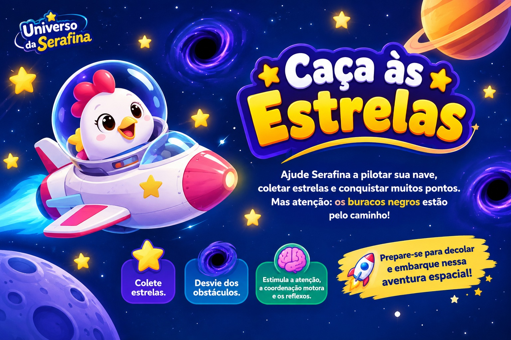
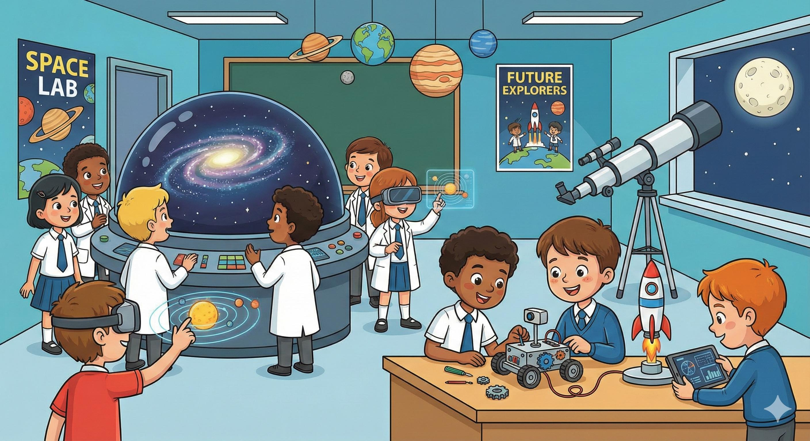
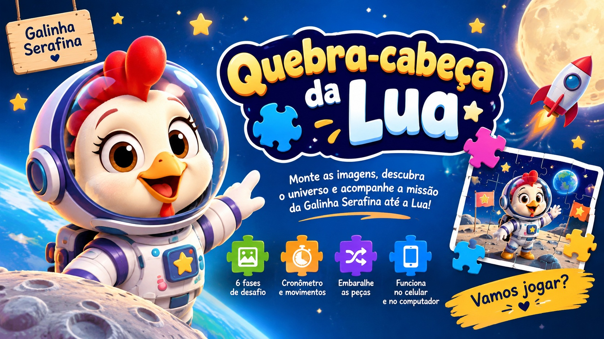
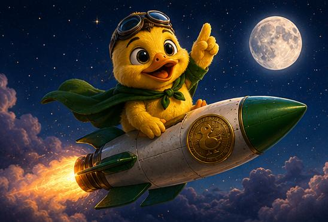

No Universo da Serafina, a aventura continua! 🚀🌙 As crianças podem explorar o espaço por meio de atividades criativas, brincadeiras e experiências educativas que estimulam a imaginação, a curiosidade e o prazer de aprender. 🎮 Divirta-se gratuitamente com nossos jogos online e embarque em novas missões ao lado da Serafina! 🐔✨

Ajude Serafina a pilotar sua nave, coletar estrelas e conquistar muitos pontos. Mas atenção: os buracos negros estão pelo caminho! Uma missão divertida que estimula a atenção, a coordenação motora e os reflexos.

Descubra os planetas do Sistema Solar e ajude a Serafina a completar sua missão! Responda perguntas e aprenda curiosidades sobre o espaço enquanto se diverte.

Monte as imagens, descubra o universo e acompanhe a missão da Galinha Serafina até a Lua! Seis fases de desafio com cronômetro e movimentos.

Uma missão divertida rumo à Lua! Ajude o Pintinho Piu a atravessar o espaço, desviando dos asteroides até chegar ao destino.